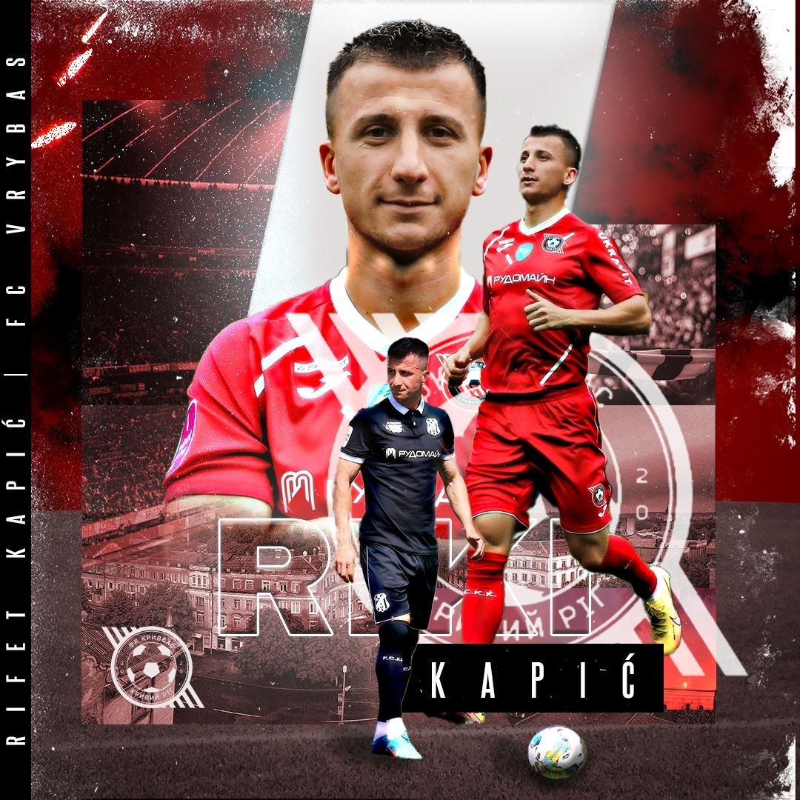
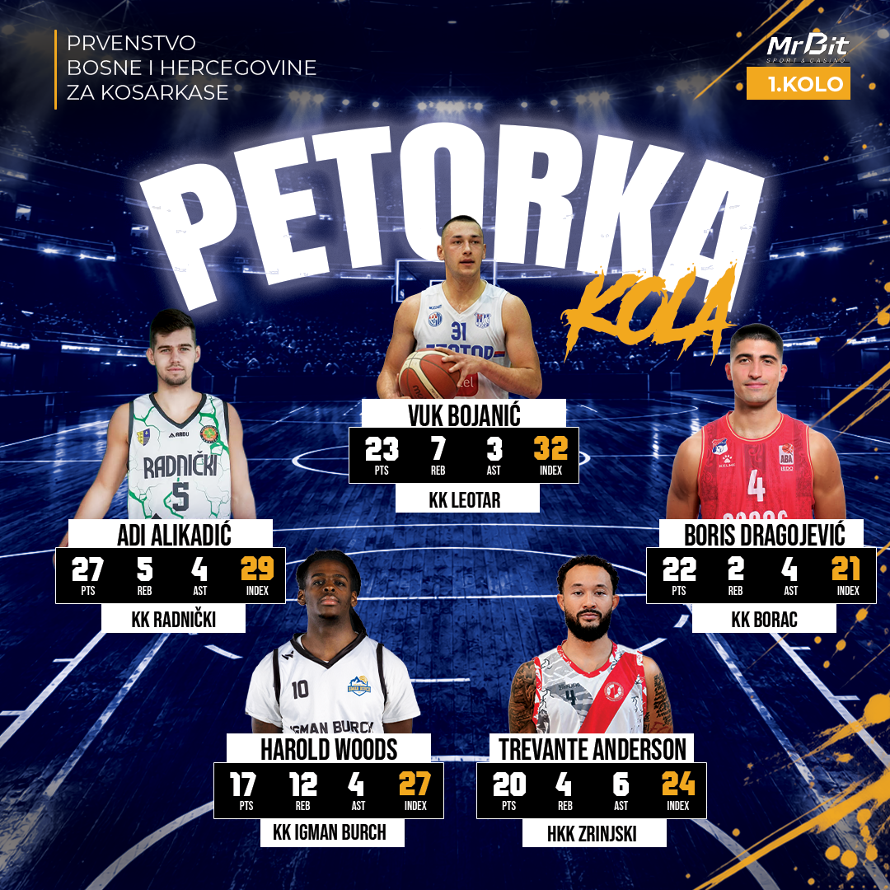

DesignDizajn
Basketball GraphicsKošarkaške grafike
A collection of sports graphics designed for basketball teams, featuring player statistics, Team of the Week selections, new player announcements, and other team-related visuals. Each design combines clear information, bold typography, and dynamic layouts to highlight players and celebrate team achievements. Kolekcija sportskih grafika za košarkaške timove, uključujući statistiku igrača, izbor najbolje petorke kola, najave novih igrača i druge vizuale vezane za tim. Svaki dizajn kombinuje pregledne informacije, izražajnu tipografiju i dinamične kompozicije kako bi istakao igrače i predstavio uspjehe ekipe.



